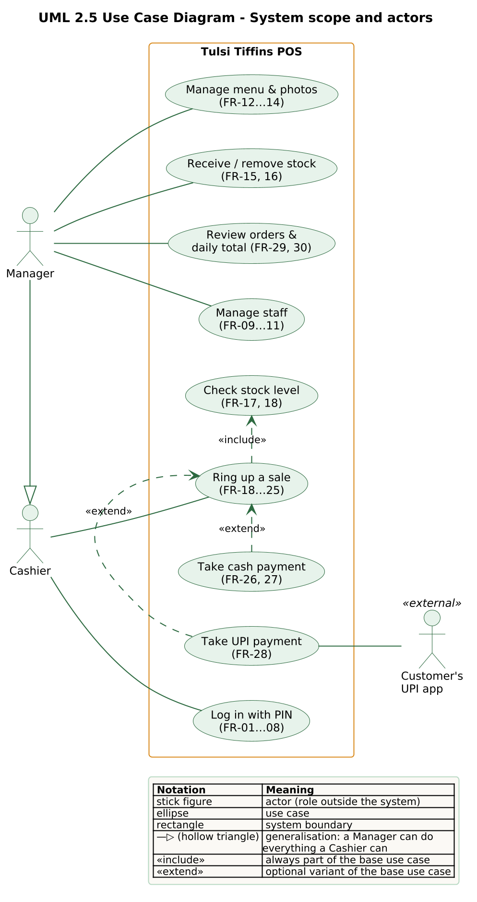

| Author | Praveen Mysore Jagannath · 10251728 |
| Tutor | Niknejad, Naghmeh |
| Document version | 1.0.0 (matches software release v1.0.0) |
| Date | 28 October 2026 |
| Baseline | Phase 1 report v0.1.0, 3 August 2026, Tables 5, 6, 9, 10 and 11 |
| Source code | github.com/mjpraveen04/tulsi-pos |
| Live application | https://tulsi-web.onrender.com |
| Version | Date | Change |
|---|---|---|
| 0.1.0 | 3 Aug 2026 | Phase 1 conception report: FR-01…30, FR-F1…F4, NFR-01…18, risks TR/BR-01…, test cases TC-01…08, glossary. |
| 1.0.0 | 28 Oct 2026 | Status of every requirement after implementation; traceability to code and automated tests; changes since Phase 1; extended glossary. |
This report closes the requirements loop of the project. Phase 1 fixed the requirements before any code was written, as the Waterfall model requires, and prioritised them with MoSCoW. This report takes that baseline unchanged – the identifiers and wording are those of the Phase 1 report – and states for each requirement whether release v1.0.0 meets it, where it is implemented and which test proves it.
| Group | Must | Should | Could | Won’t (this time) | Total |
|---|---|---|---|---|---|
| Functional requirements FR-01…30 | 24 | 4 | 2 | – | 30 |
| Future phases FR-F1…F4 | – | – | – | 4 | 4 |
| Non-functional requirements NFR-01…18 | not prioritised; each has a measurement method | 18 | |||
| Acceptance test cases TC-01…08 | cover the Must-have requirements (Phase 1 Table 10) | 8 | |||
| Status | Meaning |
|---|---|
| Met | Implemented and verified by at least one automated test that passes on release v1.0.0, or by the named review. |
| Partly met | Implemented, but part of the acceptance criterion is not met or not measured. The gap is listed as technical debt (TD-xx). |
| Not measured | The design supports the requirement, but the planned measurement has not been carried out. |
| Deferred | Won’t-have in Phase 1; intentionally not built. |
backend/tests/, run against a real PostgreSQL database (16 locally, 18 in a second run matching the cloud database). They are cited as module::test name , for example billing::tc03 for test_billing.py::test_tc03_insufficient_stock_is_rejected_and_nothing_is_written . All 120 pass; the full suite takes about 112 s.backend/app/services/ (the only layer with business rules), front-end screens in frontend/src/screens/.The architecture behind these requirements – components, data model, the atomic sale and the deployment – is described in the separate Architecture Documentation v1.0.0. Technical-debt identifiers (TD-01…10) are the same in both documents.
Two human actors use the system. The Cashier rings up sales and takes payment; the Manager can do everything a cashier can and also maintains products, stock and staff and sees the daily total. Both sign in with a four-digit PIN. The Customer is a secondary actor: they pay, and for UPI scan the café’s QR code with their own phone, outside the system.

Role enforcement is a server-side rule (NFR-11): a hidden tab in the user interface is only a convenience. Every manager-only use case returns HTTP 403 for a cashier token, which is tested for every manager endpoint (Section 3, FR-04).
Every row gives the Phase 1 requirement (shortened), its MoSCoW priority, where it is implemented and which tests verify it. Tests are cited by module and a short form of the test name; all of them pass.
| ID | Requirement | Prio | Implemented in | Verified by | Status |
|---|---|---|---|---|---|
| FR-01 | Log in with a staff PIN | M | services/auth.authenticate; screens/Login | auth:: | Met |
| FR-02 | Signed JWT issued on login | M | security.create_ | auth:: | Met |
| FR-03 | Two roles, Manager and Cashier | M | models.User.role (enum); role guards in security | rbac:: | Met |
| FR-04 | Products, inventory and staff are manager-only | M | require_ on every manager route | rbac:: | Met |
| FR-05 | Both roles use the Register and take payment | M | routers/register, routers/bills with get_ | billing:: | Met |
| FR-06 | Missing, invalid or expired tokens rejected | M | security.get_ | rbac:: | Met |
| FR-07 | PINs stored only as salted hashes | M | bcrypt via passlib in security | auth:: | Met |
| FR-08 | Session ends after one shift; log-out | S | JWT_; /api/auth/logout; client clears token | auth:: | Met |
| ID | Requirement | Prio | Implemented in | Verified by | Status |
|---|---|---|---|---|---|
| FR-09 | Manager adds staff with name, role and PIN | M | services/users.create_; screens/Staff | staff:: | Met |
| FR-10 | Manager resets a PIN | S | services/users.update_ | staff:: | Met |
| FR-11 | Manager deactivates an account; history kept | C | services/users.deactivate_ (soft delete) | staff:: | Met |
| ID | Requirement | Prio | Implemented in | Verified by | Status |
|---|---|---|---|---|---|
| FR-12 | Create product with name, category, price, opening stock, reorder level | M | services/inventory.create_; screens/Inventory | inventory:: | Met |
| FR-13 | Edit product; old bills keep the old price | M | services/inventory.update_ | inventory:: | Met |
| FR-14 | Archive product: hidden from Register, kept in history | M | services/inventory.set_ | inventory:: | Met |
| FR-15 | One-tap receive / remove stock, written to the ledger | M | services/inventory.adjust_ | inventory:: | Met |
| FR-16 | Search and filter products by name and category (within 2 s) | S | services/inventory.list_; category chips on the Register | inventory:: | Partly met |
| FR-17 | Low-stock badge at or below reorder level | S | is_ / is_ in the menu; badge in screens/Register | inventory:: | Met |
| FR-18 | Prevent selling more than the available stock | M | Stepper disabled at stock in screens/Register; enforced by services/billing.create_ under row lock and CHECK (stock >= 0) | billing:: | Met |
| ID | Requirement | Prio | Implemented in | Verified by | Status |
|---|---|---|---|---|---|
| FR-19 | Active products as category-filterable cards | M | routers/register GET /api/register/menu; photo cards in screens/Register | inventory:: | Met |
| FR-20 | Cart: add items, change quantity, remove lines | M | Basket state in screens/Register (client side; nothing is stored until payment) | Manual: TC-02 walkthrough on the live app. No front-end unit test (TD-02) | Met |
| FR-21 | Subtotal, 5 % GST and total live, in ₹ | M | services/money (Decimal, half-up) for the stored bill; live preview in screens/Register | billing:: | Met |
| FR-22 | Bill, lines, stock moves and decrement in one transaction | M | services/billing.create_ – the only writer of bills | gates:: | Met |
| FR-23 | Reject a bill exceeding stock, full rollback, clear message | M | InsufficientStockError → HTTP 409 “Insufficient stock: only N left” | billing:: | Met |
| FR-24 | Unique, sequential bill number | M | PostgreSQL sequence bill_, taken only after every check; UNIQUE on bill_ | billing:: | Met |
| FR-25 | Price at time of sale recorded on each line | M | BillLine.unit_ copied in create_ | billing:: | Met |
| ID | Requirement | Prio | Implemented in | Verified by | Status |
|---|---|---|---|---|---|
| FR-26 | Choose Cash or UPI before confirming | M | components/PaymentModal; Payment.method | payments:: | Met |
| FR-27 | Cash: amount tendered and change due | M | services/billing (change = tendered − total, rejected if short) | payments:: | Met |
| FR-28 | UPI: static QR, manual confirmation | M | services/payments (qrcode); “Mark paid” in PaymentModal | payments:: | Met |
| FR-29 | Order history searchable by date and bill number, receipt view | M | services/orders; screens/Orders | orders:: | Met |
| FR-30 | Daily sales total for managers | C | services/orders.daily_ | orders:: | Met |
| ID | Requirement | Decision | Status |
|---|---|---|---|
| FR-F1 | Automated UPI gateway verification | Not built. Needs a merchant account and a public webhook; replaced by the static QR (FR-28). | Deferred |
| FR-F2 | Supplier purchase orders and stock-in | Not built. Stock is received with the one-tap RECEIVE move (FR-15). | Deferred |
| FR-F3 | Sales and inventory charts | Not built. Only the daily total (FR-30) exists. | Deferred |
| FR-F4 | Table and reservation management | Not built. | Deferred |
Result: all 24 Must-have and 4 Should-have requirements are implemented, as are both Could-have requirements; 29 are fully met. FR-16 is implemented but its 2-second target is not measured. None of the four Won’t-have items was pulled in, so the MoSCoW freeze held for the whole project.
The measurement column repeats the method planned in Phase 1. Where it was not carried out, the status says so rather than relying on the design alone.
| ID | Requirement | Planned measurement | Evidence in v1.0.0 | Status |
|---|---|---|---|---|
| NFR-01 | Register and search within 2 s for 1,000 products | Load test with a seeded catalogue | Indexed queries; menu is one query. Load test not run (TD-01). | Not measured |
| NFR-02 | Bill confirmation within 1 s | API response time | One short transaction per sale. Not measured; on the free host the first request after 15 idle minutes takes 30–60 s (TD-01, TD-05). | Not measured |
| NFR-03 | 10 concurrent Register users | Locust load test | Correctness under 10 parallel sales is proven (gates:: | Not measured |
| NFR-04 | Stock never negative, even concurrently | Simultaneous-bill test | Release gates gates::SELECT … FOR UPDATE in ascending id order; CHECK (stock >= 0) tested by inventory:: | Met |
| NFR-05 | All multi-step writes are ACID | Fault injection | Release gate gates:: | Met |
| NFR-06 | Append-only ledger reconciles with stock | Reconciliation query | inventory::stock_. | Met |
| NFR-07 | Every endpoint except login needs a JWT | 401 without a token | rbac:: | Met |
| NFR-08 | Tokens expire after about 8 h | Token-lifetime test | auth:: | Met |
| NFR-09 | PINs hashed with a per-user salt | Review and DB inspection | auth:: | Met |
| NFR-10 | All input validated server-side | Negative-input tests | Pydantic models on every route: auth:: | Met |
| NFR-11 | Roles enforced server-side on every endpoint | Cashier token → 403 | rbac:: | Met |
| NFR-12 | Tablet use, large targets, ≤ 4 taps per bill | Walkthrough, tap count | Touch layout with photo cards. A one-item UPI sale takes 4 taps (item, Charge, UPI, Mark paid); a cash sale also needs the amount typed (TD-10). The walkthrough was done by the developer, not by café staff. | Partly met |
| NFR-13 | Clear, human-readable errors | Review of error paths | Domain errors mapped centrally in app.main; tests assert exact messages, e.g. “Insufficient stock: only 3 left” (billing:: | Met |
| NFR-14 | One Docker Compose command deploys everything | Clean-machine test | docker compose up --build runs migrations, seed and app. The same Dockerfile was built from scratch by Render. Local PostgreSQL 16 vs cloud 18: TD-08. | Met |
| NFR-15 | Front end and back end deploy separately, REST only | Architecture review | Two services in render.yaml (static site and Docker API) and two containers locally; the SPA calls only /api and /media. | Met |
| NFR-16 | Routing, service and data-access layers | Code-structure review | No router imports app.models or runs a query; all rules in app/services/ (checked by search over app/routers/). | Met |
| NFR-17 | Schema via versioned migrations | Migration history | Alembic revisions 0001 (initial schema) and 0002 (product photos); alembic upgrade head on start; the app never creates tables itself. | Met |
| NFR-18 | Each bill and stock move records user and time | Schema inspection | bills.cashier_, stock_, created_ on both; inventory:: | Met |
Result: 14 of 18 non-functional requirements are met and verified. NFR-12 is partly met. The three performance requirements NFR-01…03 are designed for but were not measured: the planned load test was cut when the schedule slipped. The correctness of concurrent sales, the more important half of NFR-03, is covered by the release gates.
Phase 1 specified eight manual test cases. Each one is now also an automated test with the same data and expected result, so it runs on every change and not only once before the demo. The table shows the Phase 1 expectation, the automated test and the result on release v1.0.0.
| TC | Req. | Expected result (Phase 1) | Automated test | Result |
|---|---|---|---|---|
| TC-01 | FR-04, NFR-11 | Cashier lands on the Register; Products page and endpoint blocked with 403. | rbac:: | Pass · live 403 |
| TC-02 | FR-21 | 2× Dosa ₹90, 1× Coffee ₹40, 3× Chai ₹25 → subtotal ₹295.00, GST ₹14.75, total ₹309.75. | billing:: | Pass |
| TC-03 | FR-22, FR-23 | Item with 3 in stock, order 5: “Insufficient stock: only 3 left”; stock still 3; no bill or ledger rows. | billing:: | Pass · live 409 |
| TC-04 | FR-27 | Total ₹309.75, tendered ₹500 → change ₹190.25; bill saved as Cash. | payments:: | Pass · live cash sale |
| TC-05 | FR-15, FR-22 | Dosa 24, sell 2 → 22, with a −2 SALE move referencing the bill. | billing:: | Pass |
| TC-06 | FR-24 | Second bill number = first + 1; no duplicates. | billing:: | Pass · live 1042 → 1043 |
| TC-07 | FR-26, FR-28 | UPI: QR shown, “Mark paid” saves the bill as UPI and deducts stock. | payments:: | Pass · live UPI sale |
| TC-08 | FR-29, FR-25 | Old receipt found by bill number shows the price at sale after a later price change. | orders:: | Pass |
Module (backend/tests/) | Tests | Main requirements |
|---|---|---|
| test_ | 13 | FR-01, 02, 06–08, 11; NFR-07–10 |
| test_rbac.py (parametrised over every route) | 27 | FR-03, 04, 06, 11; NFR-07, 11 |
| test_ | 11 | FR-04, 09–11 |
| test_ | 14 | FR-04, 12–19; NFR-04, 06, 18 |
| test_ | 13 | FR-05, 14, 18, 19, 21–25; NFR-10, 13 |
| test_ | 6 | NFR-04, NFR-05, FR-24, TR-04 |
| test_ | 9 | FR-24, 26–28 |
| test_ | 11 | FR-04, 14, 25, 29, 30 |
| test_ | 16 | FR-04, 19; NFR-07, 10 |
| Total | 120 | all pass on PostgreSQL 16 and 18; about 112 s |
Phase 1 listed five technical and four project risks, each with a mitigation. The table states whether the mitigation was carried out and what evidence exists.
| ID | Risk (Phase 1) | Mitigation carried out and evidence | Status |
|---|---|---|---|
| TR-01 | Race condition sells the same dish twice | Row locks + CHECK; concurrency release gates pass. | Closed |
| TR-02 | Partial writes from unfamiliar transaction semantics | One transaction in services/billing; fault-injection gate passes. | Closed |
| TR-03 | Prototype does not translate into React | Prototype used as visual reference only; five screens rebuilt as typed components. | Closed |
| TR-04 | ₹ / GST rounding errors | Decimal + NUMERIC; gates:: | Closed |
| TR-05 | Docker behaves differently on another machine | Same images locally and on Render; suite passes on PostgreSQL 16 and 18. Version gap remains (TD-08). | Mitigated |
| BR-01 | Scope creep | MoSCoW freeze held: 0 of 4 Won’t-have items built. | Closed |
| BR-02 | Owners distrust a self-hosted till | Familiar counter flow, cash and UPI from day one. Not validated with a real café owner. | Open |
| BR-03 | Solo developer’s timeline stalls | Occurred: planned end 25 Sep, actual 28 Oct (+33 days). Must-haves were front-loaded, so only the load test had to be cut. | Occurred |
| BR-04 | A missed requirement surfaces late | Partly occurred: two gaps were found in the final phase – short cash still used up a bill number (FR-24), and the free cloud host’s disk would have lost photos. Both fixed with a regression test and migration 0002. | Closed |
No requirement was removed or re-prioritised. The changes below refine how a requirement is met; each was made during implementation when a test or the deployment showed that the Phase 1 wording left a gap.
| Affects | Change | Reason |
|---|---|---|
| FR-24 | The bill number is taken only after every check, including stock and the cash amount. | PostgreSQL sequences are not rolled back. Taking the number first left gaps for rejected sales; a Phase 3 test showed that short cash still caused one (bill 1044 instead of 1043). |
| FR-27 | A cash payment below the total is rejected with HTTP 400 and nothing is written. | The Phase 1 criterion described only the change calculation, not the short-payment case. |
| FR-11 | The last active manager cannot be deactivated or demoted, and nobody can deactivate themselves. | A staff test showed the café could lock every manager out. |
| FR-11, NFR-11 | Role and active flag are re-read from the database on every request, not trusted from the token. | A deactivated or demoted user must lose access at once, not after 8 hours. |
| FR-12, FR-19 | Managers can upload a product photo; the photo is stored in PostgreSQL (migration 0002), decoded and re-encoded on upload. | The Register shows photo cards as in the prototype. The free cloud host wipes its disk on restart, so a file volume would lose photos; re-encoding blocks disguised files (NFR-10). |
| FR-29 | Cashiers can also read the bill history (receipt reprint); only the daily total is manager-only. | Phase 1 already named both actors for FR-29; the manager-only part is FR-30. |
| NFR-07 | Three routes besides login are public: the staff name list for the login picker, /api/health and product photo files. | The login screen must list names before anyone is signed in; the host’s health check has no token; photos are loaded by <img> tags, which cannot send a token. None of them returns PIN hashes or sales data (auth:: |
| NFR-14 | Added a cloud deployment (Render + Neon) next to Docker Compose. | The final submission needs a working link. Same Dockerfiles; configuration only through environment variables. |
| Phase 1 Table 8 | Front end in strict TypeScript instead of JavaScript. | Shared types make a UI/API mismatch a build error (supports NFR-15). |
| Group | Total | Met | Partly met | Not measured | Deferred |
|---|---|---|---|---|---|
| Must-have FR | 24 | 24 | – | – | – |
| Should-have FR | 4 | 3 | 1 (FR-16) | – | – |
| Could-have FR | 2 | 2 | – | – | – |
| Won’t-have FR-F1…F4 | 4 | – | – | – | 4 |
| Non-functional NFR | 18 | 14 | 1 (NFR-12) | 3 (NFR-01…03) | – |
| Acceptance tests TC | 8 | 8 pass | – | – | – |
| ID | Item | Requirement | Remedy |
|---|---|---|---|
| TD-01 | No automated load test | NFR-01…03, FR-16 | Locust script with a 1,000-product seed and 10+ simulated tills. |
| TD-02 | No front-end unit tests | FR-20 | Vitest + React Testing Library for the basket and payment modal. |
| TD-03 | No lock-out after wrong PINs | NFR-09 | Temporary lock or rate limit after five failures. |
| TD-04 | UPI confirmed by the cashier | FR-28 (by design) | Payment gateway with webhooks (FR-F1). |
| TD-05 | Free-tier cold start of 30–60 s | NFR-02 | Always-on paid instance for real use. |
| TD-06 | No token revocation except deactivation | NFR-08 | Short-lived token with refresh, or a deny list. |
| TD-07 | Staff names visible on the login screen | NFR-07 | Device pairing code before the list is shown. |
| TD-08 | PostgreSQL 16 locally, 18 in the cloud | NFR-14 | Pin both to one major version. |
| TD-09 | Basket preview uses JavaScript numbers | FR-21, TR-04 | Integer-paise arithmetic in the client; the stored bill is already Decimal. |
| TD-10 | Cash sale needs the amount typed | NFR-12 | Quick-amount buttons (exact, ₹100, ₹200, ₹500). |
Terms from the Phase 1 glossary (Table 11), extended with terms introduced during implementation (marked ⁺).
| Term | Definition |
|---|---|
| ACID | Atomicity, Consistency, Isolation, Durability – the guarantees of a database transaction, so a bill and its stock changes commit or roll back as one unit. |
| Alembic | Migration tool for SQLAlchemy that version-controls changes to the database schema. |
| Archive (product) | Deactivating a product so it disappears from the Register but stays on historical bills; products are never deleted. |
| Bill / Order | A completed sale: line items, subtotal, GST, total, payment and a unique bill number. |
| Bill line | One item on a bill, storing quantity and the unit price at the time of sale. |
| Blueprint ⁺ | Render’s infrastructure-as-code file (render.yaml) that defines the cloud services of the application. |
| Cashier | Counter staff role: Register, payment and bill history, but no product, stock or staff management. |
| Cold start ⁺ | The delay when a sleeping free-tier service is woken by the first request (about 30–60 s). |
| Decimal ⁺ | Python’s exact decimal number type, used for all money; stored as NUMERIC(10,2). |
| Docker Compose | Tool that runs front end, back end and database as linked containers with one command. |
| FastAPI | Python web framework used for the REST API, with built-in validation. |
| GST | Goods and Services Tax – 5 % on the subtotal, rounded half-up to two decimals. |
| JWT | JSON Web Token – signed token issued at login and sent with each request to prove identity and role. |
| Ledger (stock ledger) | The append-only stock_ table, the single source of truth for every stock change. |
| Manager | Owner/manager role with full access: products, inventory, staff, totals and the Register. |
| Migration ⁺ | A numbered Alembic script that changes the schema (0001 initial schema, 0002 product photos). |
| MoSCoW | Prioritisation: Must have, Should have, Could have, Won’t have this time. |
| Neon ⁺ | Managed PostgreSQL service hosting the cloud database. |
| POS | Point of Sale – where an order is rung up and paid; here, the Register screen. |
| PostgreSQL | The relational database, chosen for ACID transactions and row-level locking. |
| Pydantic ⁺ | Python library that validates every request body and query against a typed schema. |
| RBAC | Role-Based Access Control – permissions by role, enforced on the server. |
| React | JavaScript library used to build the single-page front end, written in TypeScript. |
| Release gate ⁺ | A test that must pass before a release: the concurrency and rollback tests in test_. |
| Reorder level | Per-product threshold at or below which a low-stock badge is shown. |
| Row-level locking | Database mechanism (SELECT … FOR UPDATE) that serialises concurrent updates to the same product row. |
| Sequence ⁺ | PostgreSQL counter object (bill_) that issues bill numbers; values are not returned on rollback. |
| SPA | Single-Page Application – loads once and updates views without full page reloads. |
| Stock movement | One immutable ledger entry: quantity change, reason (OPENING, RECEIVE, REMOVE, SALE), user, time and optional bill. |
| Technical debt ⁺ | A known shortcut or gap, recorded with an ID (TD-xx) and a remedy. |
| Traceability ⁺ | The link from a requirement to the code that implements it and the test that verifies it. |
| TypeScript ⁺ | Typed superset of JavaScript; under strict mode a type mismatch fails the build. |
| UPI | Unified Payments Interface – India’s real-time payment system; here used through a static QR code. |
| Waterfall model | Process with sequential phases (requirements, design, implementation, testing, deployment), each completed before the next. |